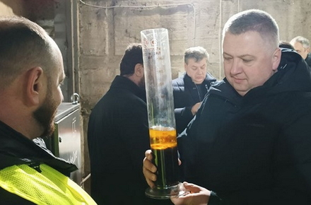
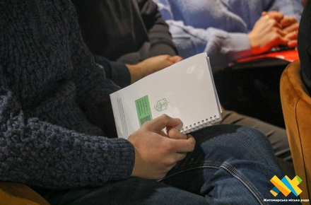

Новини

За ніч у Житомирській області горіли два будинки: через порушення правил експлуатації печі та необережність під час куріння
Дізнатися більше
На трасі у Житомирській області зупинили вантажівку з колодами сосни і виявили проблеми з документами у водія та на вантаж
Дізнатися більше
Минулого року кожен депутат Житомирської міськради отримав 300 тисяч на потреби округів, третина віддала їх на матеріальну допомогу
Дізнатися більше

У Житомирській області підприємство з молдовськими інвестиціями виготовило перший літр біодизелю з рослинної олії
Дізнатися більше
